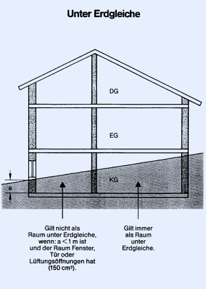

Räume unter Erdgleiche sind Räume, deren Böden allseitig tiefer als 1,0 m unter der umgebenden Geländeroberfläche liegen.
Diese Räume stehen Orten gleich, die allseitig von dichten, öffnungslosen Wänden von mindestens 1,0 m Höhe umschlossen werden.